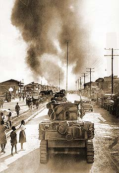

|
j
a v a s c r i p t |
Pg.2/2
February 3, 1945
Speaking of the war, there's a new pillbox a-building on Gandara, and two sites are being mined on Legarda Street. Even the pillbox at the Rotonda is being strengthened though it's still a joke of an affair. The really big preparations are on the south side, including artillery in Dewey Boulevard. It doesn't look good for the civilians in Intramuros, Paco, Ermita and Malate. A lady from Ermita called up, wanting to place some belongings outside that district. Many families feel the same way. It's too late now.

1st Cavalry in Manila
The big story today is really of last night, and it looks like it's going to be repeated tonight. Explosions of all kinds, large and small, near and far — the big ones shaking the earth, jolting the people out of their beds and keeping some awake all night. Most folks here got the impression that artillery fire was being exchanged as the Americans entered the city. The concussion of an explosion at 0745 at perhaps Camp Murphy was the strongest I've ever felt. As I write this at 2003, we've just "sustained" several heavy explosions ... each one rocking our house. Whoops! Another one just now ... and it's bound to go on all night. The papers today had mostly recycled old news. Maharajah issued another warning for people living "near bridges and strategic places" to move. Page 2 had F.C. de la Rama saying he is serving two daily meals to 1,000 poor people in Manila. He's really: (a) showing how much money he made from the Japanese; (b) trying to save his neck; (c) spending worthless Japanese currency. Still, for the 1,000 poor, it's better than nothing. I got an earful today from Vill's cousin, Montañer, of "intelligence," who showed me some U.S. magazines and posters a few months ago. According to him, Mr. and Mrs. Mencarini, Grinnell and Duggleby were charged with spying, tortured, and executed by the sword. Laurel and Aquino have been taken to Japan; Paredes and Sison have been executed; Recto and Yulo are under close surveillance. The McMickings are still in — only the children were let out. Montañer said the Japanese had been looking for a transmitter in the neighborhood when they entered the McMicking house. They found three radios, one of them with a shortwave gadget. The thing that displeased them most was a set of earphones — like the one I use every night. I used to play ball with Joe McMicking, a great guy and a smart airman of sorts. MacArthur took him along when he left the Philippines. Someone told me today that Santo Tomas deaths reached a record of 17 in 24 hours one or two days ago. Montañer knew about it and said the internees are on their last legs ... starving. He couldn't confirm Buttenbruch's death, but he did say that Father Kelly and another priest were let go. 2145: The explosions continue — a brutal one nearby almost blew our sliding doors out of their rails! A huge fire is on to the northeast, accompanied by sounds of exploding ammunition. Just now a rat-a-tat-tat and two more bursts of machine gun fire. ...ooOoo... |
|
|
|
|